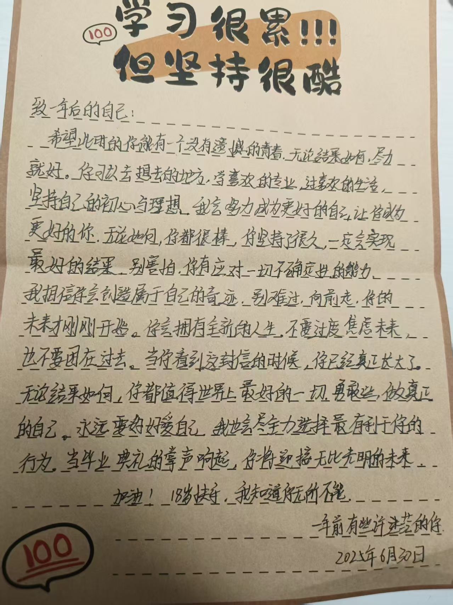
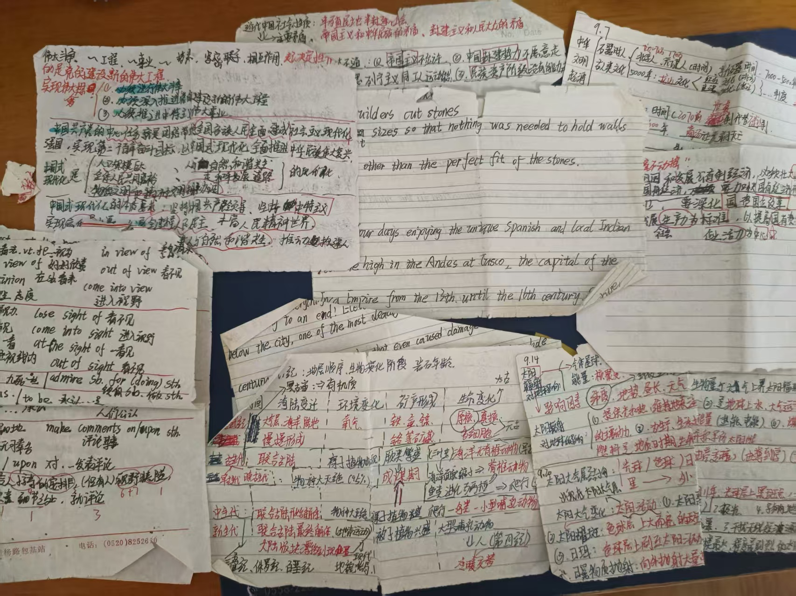
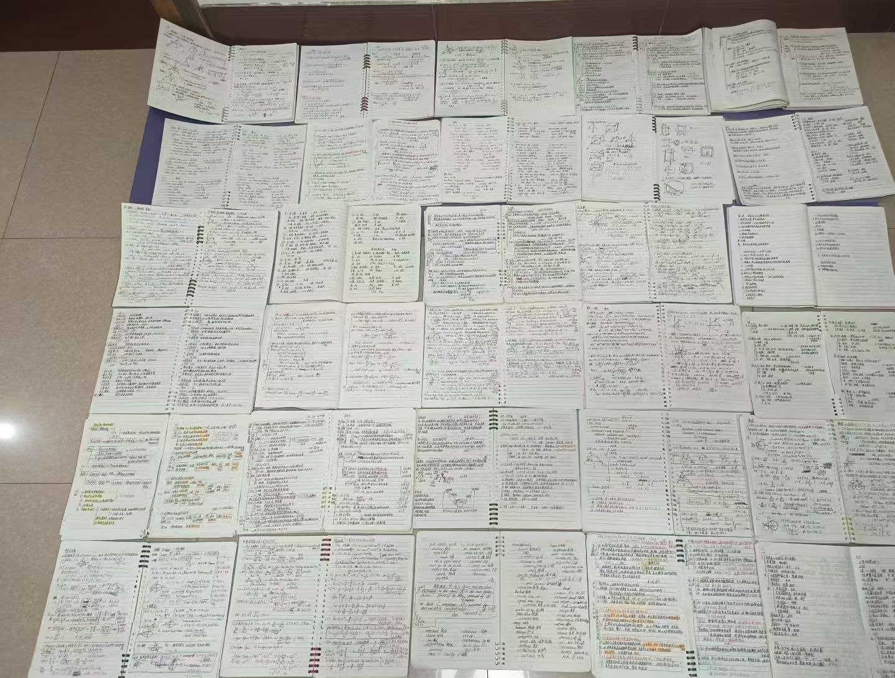
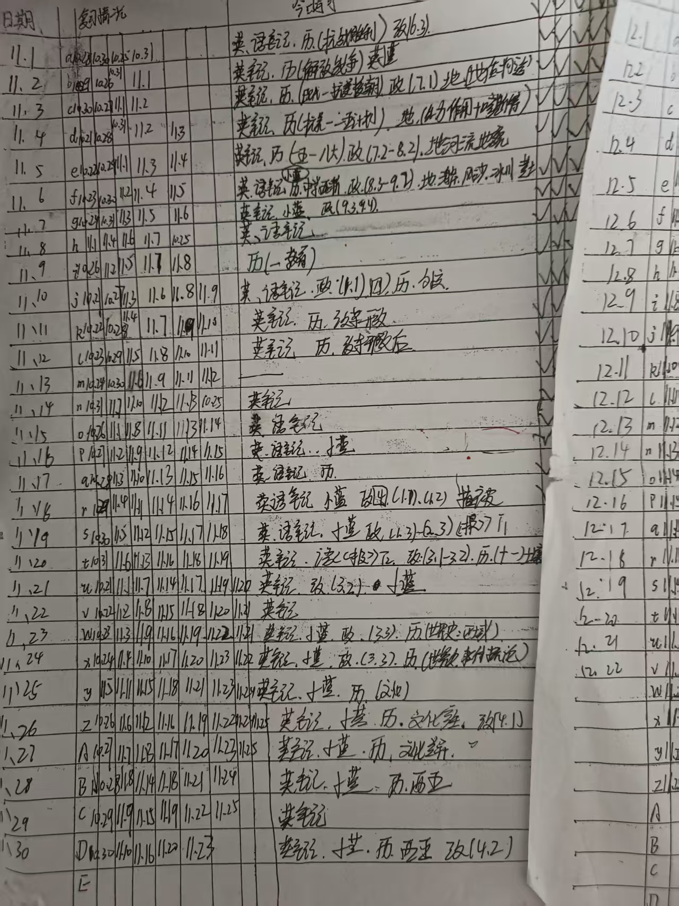
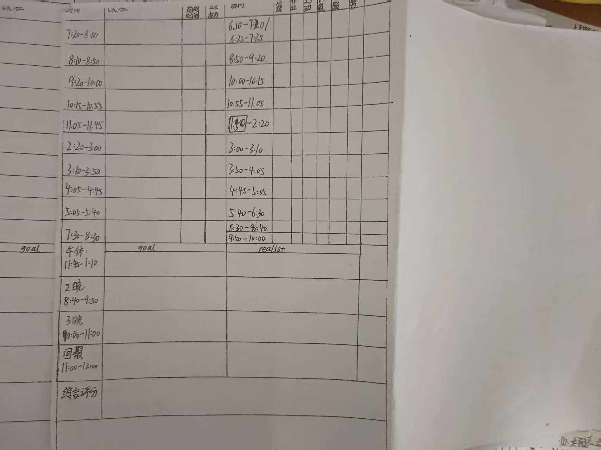
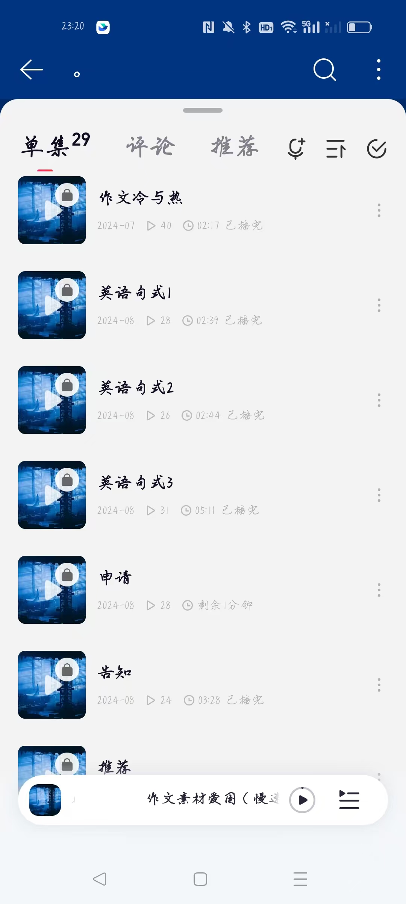
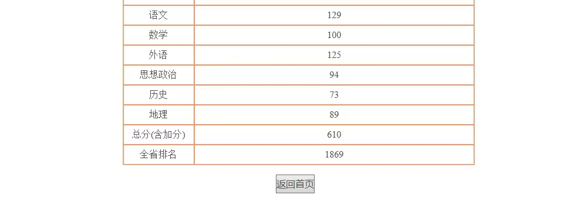

记忆 · 一
我记得高一刚刚开学的时候读到了老王的《高三突围》，觉得自己抓到了先机，每天5点多天不亮就偷偷从寝室爬起来，借着水房微弱的光疯狂的看书，寝室的床质量不好，我必须特别小心，才能保证不吵到舍友，冬天的时候穿衣服声音比较大，我甚至只能头天晚上把包放在门口，清晨把外衣抱着去寝室外面穿。
查完分的晚上，看到了一年前写给自己的信，突然特别特别想哭。
我不敢想象一年前的自己是怀着怎样的心情写下了这封信，当时是高三的入境仪式，也是我整个高中里最痛苦的时候，那个时候身体和状态出现了很大的问题，成绩也进入了瓶颈期，我每天都无比的焦虑，并且感到自己甚至失去了前行的动力，但无论如何，当时的我希望未来的自己看到这封信更多的是感动与幸福，而不是责怪与遗憾。
17岁的我把最温柔的话留给了18岁的我高三其实是我高中生涯里面努力程度比较低的一年，高三的状态，根本赶不上高一的状态，所以当时的我非常非常痛苦，尽管可能已经很努力了，但是到不了高一拼命的状态，我也会非常责怪自己。

每当想起高一的我，16岁的我自己，我都会非常非常感动，敬佩以至于怀念。中考成绩不是特别理想，所以高一特别特别拼命。
我记得高一刚刚开学的时候读到了老王的《高三突围》，觉得自己抓到了先机，每天5点多天不亮就偷偷从寝室爬起来，借着水房微弱的光疯狂的看书，寝室的床质量不好，我必须特别小心，才能保证不吵到舍友，冬天的时候穿衣服声音比较大，我甚至只能头天晚上把包放在门口，清晨把外衣抱着去寝室外面穿。
我记得高一刚刚学文科的时候，还不知道什么是活页本，为了能随身携带，我自己把纸裁成两段，写了很多简陋的小纸条放在口袋里，现在拿出来已经破的不成样子，直到高二的时候，我发现活页本更好用，背书的时候可以把里面的纸张单独拿出来，无论是做早操，排队吃饭，排队打水，我的小纸条从未缺席。


我记得高一为了争取更多的学习时间，选择住宿，每天三晚结束都已经快11点了，我总是喜欢在晚上找一个空寝室背书背到12点，我的室友们甚至一开始因为我太爱学习了，而认为我不好相处，我喜欢在洗漱之前把完整的东西背下来，然后在洗漱的时候用嘴巴再直接复述，即使每次洗衣服的时候身边总有诧异的目光。
我记得高一住宿的中午，因为寝室学习效率低，无论寒冬酷暑都在楼梯口学习的我们。我记得冬天楼梯口冰冷的楼梯和刺骨的寒风，我也记得夏日窗边黏腻的空气和飞舞的蚊虫，还有夜晚楼梯口昏暗的灯光，还有我自己带的总是连接不良的，一闪一闪的小台灯。
我记得高一从树林那里学到了艾宾浩斯曲线记忆法，那个时候还不会用电脑，我自己对着书手绘了表格，强迫自己在每一天完成学习任务之后，复习前一天、前四天、前七天、前十天、前十四天、前二十天、前三十天的内容，强迫自己把每一天的内容完成七轮复习，用一个月写完一张艾宾浩斯曲线记录表。

我记得高一特别特别注重时间管理，手绘了每天的时间表，清清楚楚的记录课上，课间，以及自习的时候做了哪些任务以及效率多少，我把亲手绘制的表打印好多份，一天一张。

我记得高一刚刚入学的时候进的是理科好班，准备学文科的我因为当时考试只考理科，而总分很差，害怕过不了学考，我只能在物理课上问了很多题，特别简单的问题，在每一次老师说这里都懂了吗的时候，硬着头皮提出不会，迎着全班各种各样的目光拼命学。
我记得高一的时候没有双休，我每次星期六中午放学之后都会简单吃一口饭，来不及睡觉，我就往图书馆跑，害怕睡过点了，没有位置，为了保证学习状态，只能在图书馆趴一小会，然后一直学到晚上10点。
我记得高一刚刚开学的时候数学什么都不会，我只能找到机会就拼命的去办公室问题，平均一天去办公室五六趟，然后还担心会不会问的太多了会打扰到老师。数学题花的时间比较长，短短的课间10分钟问不完，我只能每次选择吃饭那个大课间去问题，为了早点赶过去，每一顿晚饭都是掐着表吃的，有时候去食堂的时候跑的慢了一点时间就不够吃饭了，只能狼吞虎咽后匆匆放下筷子，抱着书跑向办公室。
我记得在校园里，我去上课，去食堂，去寝室都是跑着的，或者边走边看小纸条，正因如此，我很少跟朋友结伴而行，结伴吃饭，我的朋友时常问我，一个人走路，一个人吃饭，会不会很尴尬。我的回答是节省时间。
我记得高中因为早起晚睡，上课有时候也会犯困。我记得为了醒困而在皮肤上留下的指甲印，也记得顶着老师和同学的目光，在困的时候站到教室后面的时刻，甚至有时候即使站着也会困到昏厥，站着站着，手里的书会掉到地上。
我记得高中背书背的最难的时候，下载了b站很多可以听的资料，下载了一堆古诗词，政治核心知识点，历史核心知识点，走路听，吃饭听，睡前听，只要不看书，零碎时间在家都听。然后很多英语作文的句式，网络上没有现成的音频，我甚至会自己录了一堆网易云的播客，用自己的声音循环播放来记英语，因为要背的东西实在太多了，而且数学占了太多时间，导致我的背诵不得不用在零碎时间。

我知道自己没有太多天赋，只能靠努力填补。还好终于有了结果。
感谢高中三年拼尽全力的自己。
谢谢你，给了直面困境的勇气。
谢谢看到这里的你。

我一直在想，为什么我要把这些东西写下来。
可能是因为，我太害怕忘记了。我怕我忘了高一那年冬天，在楼梯口背书的时候手指冻得翻不动书页。我怕我忘了自己在物理课上站起来说"这里我不懂"的时候，整个教室安静的那两秒钟。我怕我忘了那些一个人走过的路、一个人吃过的饭、一个人在水房里借光看书的凌晨五点。
这些东西说出来，好像也没什么了不起的。没有逆袭的神话，没有天才的剧本，就是一个不太聪明的人，用最笨的方法，走了很远的路。
但是你知道吗。当我查完分的那一刻，我没有哭。我是在翻到一年前那封信的时候哭的。因为17岁的我，在信的最后写了一句话，她说：不管你考了多少分，我都为你骄傲。
她不知道结果。她在最痛苦的时候写下这句话。她甚至不确定未来会不会变好，但她还是选择了温柔。17岁的我，把所有的恐惧自己吞下去了，把最好的祝愿留给了18岁的我。
那封信我现在还留着。放在书桌上，跟那些破破烂烂的小纸条、手绘的艾宾浩斯表格、一闪一闪的小台灯放在一起。这些东西都很旧了，折痕磨出了毛边，圆珠笔的字迹已经开始模糊。但每次看到它们，我都会想起那个在黑暗中一点点往前挪的自己。她那时候什么都还没证明，手里只有一摞手写的小纸条和一颗不肯认输的心，但她从来没有停下来。
我记得每个周六的傍晚，图书馆里人越来越少，窗外的天一点一点暗下去。我习惯坐在二楼靠角落的位置，因为那里的灯不会闪。有一次低头太久了，抬起头才发现整个阅览室只剩我一个人，走廊尽头传来清洁阿姨拖地的声音。我收拾书包站起来，腿已经麻了。走到楼下，路灯刚好亮起来。
所以这篇文章不是为了告诉别人我有多努力。不是的。
我是想告诉那个还在楼梯口背书的你，那个在物理课上不敢举手的你，那个觉得自己不够聪明、不够好、走得太慢的你。你没有落后，你只是用你自己的方式在前行。每一个你觉得毫无意义的重复的清晨，每一次你以为没有人注意到的咬牙坚持，都在未来的某一天等着你。
它们不会让你变成天才。但那些早起的凌晨，那些背了又忘、忘了又背的夜晚，那些掐着表吃完的晚饭，那些在皮肤上留下的指甲印，那些站到教室后面还是困到手里的书滑落到地上的瞬间——这些都不会白费。它们不会让你变成天才，但它们会把你带到你应该去的地方。
后来有人问我，查完分是什么感觉。
我说，像走了很久很久的夜路，终于看到了天亮。
那道光不是分数本身，是你在黑暗里走了那么久，终于可以回头看一眼来时的路，跟自己说一句——原来我真的可以。写这篇文章的时候，她刚刚查完高考分数——610分，安徽省文科1869名
上面这些"我记得"，每一个都是她走过的路。高一那年她在楼梯口借光看书的时候，不知道会有这个结果。她在物理课上硬着头皮问简单问题的时候，也不知道。但16岁的她每天都做了同一件事：不放弃。
那些看不到结果的时刻，累积成了今天的分数。这不是一个"努力就有回报"的童话，这是一个具体的人用具体的行动证明了自己的故事。
如果这篇文章让你想起了某个在黑暗里咬牙前行的自己，那她的记录就已经有了意义。